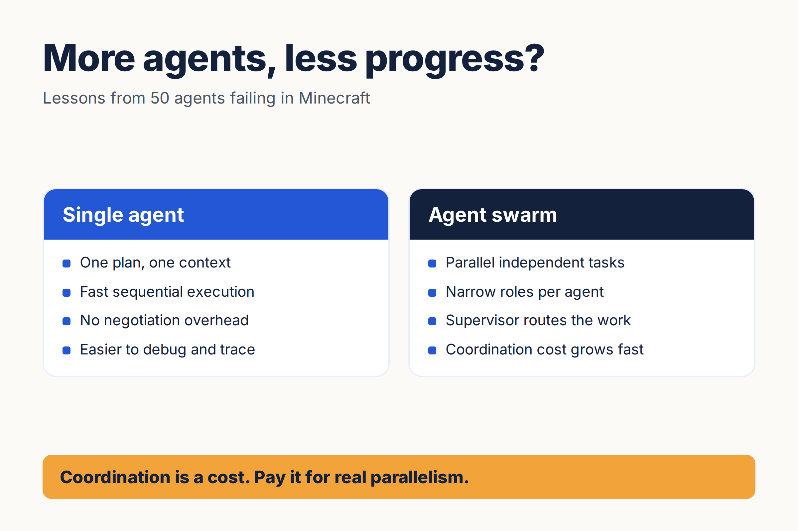

Когда рой AI-агентов вредит: урок из эксперимента в Minecraft

Команда с YC-бэкингом запустила рой агентов в Minecraft и Mindustry. Вместо разделения работы — переговоры, дублирование задач и взаимные блокировки. Больше агентов ≠ больше прогресса.
Координация в multi-agent дизайне — это цена: токены, задержки, новые точки отказа.
Рой оправдан, когда:
🔹 задачи реально независимы и параллельны
🔹 у каждого узкая, чётко определённая роль
🔹 супервизор решает, кто с кем общается
Рой вредит, когда:
⚠️ нужен общий state или согласованный план
⚠️ каждое решение требует консенсуса
⚠️ роли пересекаются — работа дублируется
Мой дефолт: один агент, хороший набор инструментов и цикл plan-and-execute. Второй агент — только если задача доказанно не идёт последовательно.
Демо с роями впечатляют, но продакшен выигрывает меньшей координацией.